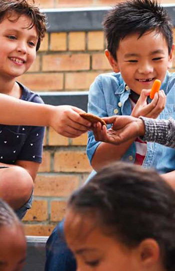

Our Story
We’ve been inventing, inspiring and investing in a nation of chocolate lovers for nearly 4 years. Delve into the company’s fascinating history and you’ll find a wealth of interesting facts and information on subjects including how the nation’s favourite chocolate was born, the Chocolate family, packaging, and so much more! Just click on a time period and you’ll be taken back in time – explore the general history of Chocolate or find out more about a particular aspect of the business.
Who we are

Innovation With consumers always top of mind, we focus our time and attention on understanding how they live, shop, and of course - snack! Investing in Research and Development At Mondelēz International, we're obsessed by understanding consumer needs and delivering snacks with consistent quality and taste. We’re investing in a global network of technical centers to research and support our growth while continuously innovating our processes. 2,400 scientists, chemists and engineers work throughout the world on research and development opportunities 11 key research and development centers worldwide lead our innovation efforts. Fostering an agile approach to innovation We focus on speed and agility to perfect our processes. In order to react faster to the marketplace, our local teams and brands have the ability to drive their own operations to meet the needs of their consumers nearby. Part of our process includes a test-and-learn concept where we try new ideas and if they are successful, roll them into other areas of the business.
Marketing Approach
Marketing Focused on Human Connection Humaning is a unique, consumer-centric approach to marketing that creates real, human connections with purpose, moving Chocolate beyond cautious, data-driven tactics, and uncovering what unites us all. We are no longer marketing to consumers, but creating connections with humans. Humaning is a natural fit for a company that creates the snacks that form the basis for connections between people all over the world and is a clear manifestation of the Chocolate brand purpose to do what is right: leading the future of snacking by offering the right snack, for the right moment, made the right way. With humaning, we will feed the hunger for human connection in everything we do by being fully consumer-centric: Listening, empathizing and adapting to fit consumer needs at any moment with perfectly crafted products that are a source of delight.
